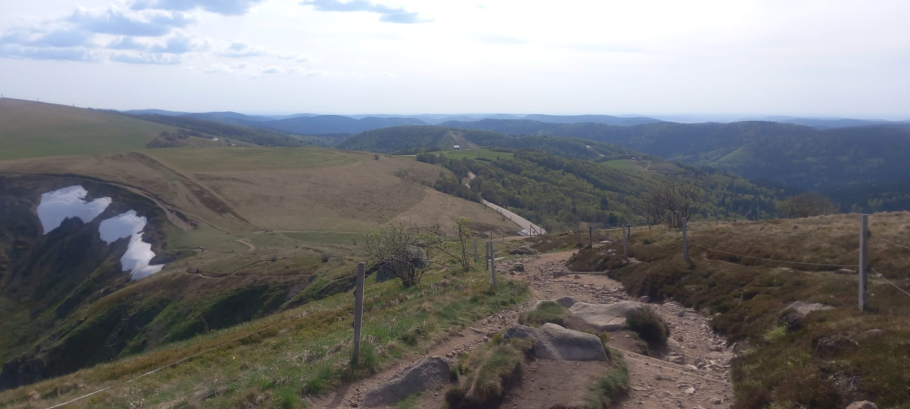
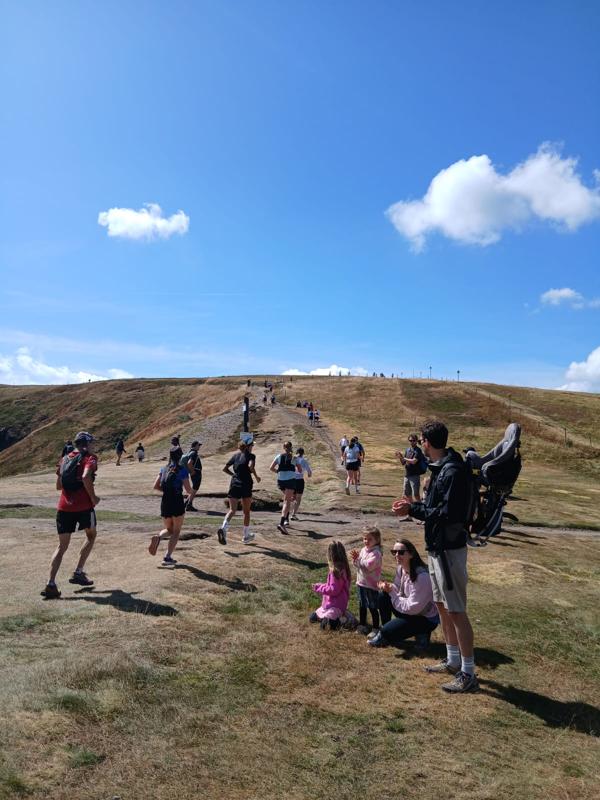
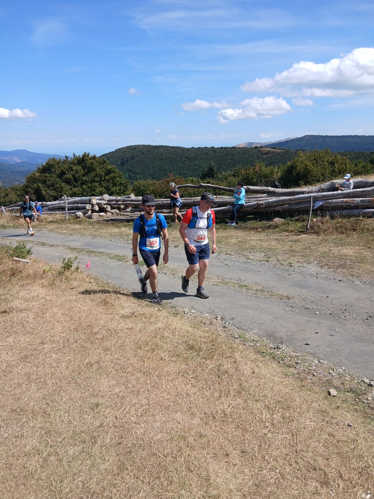
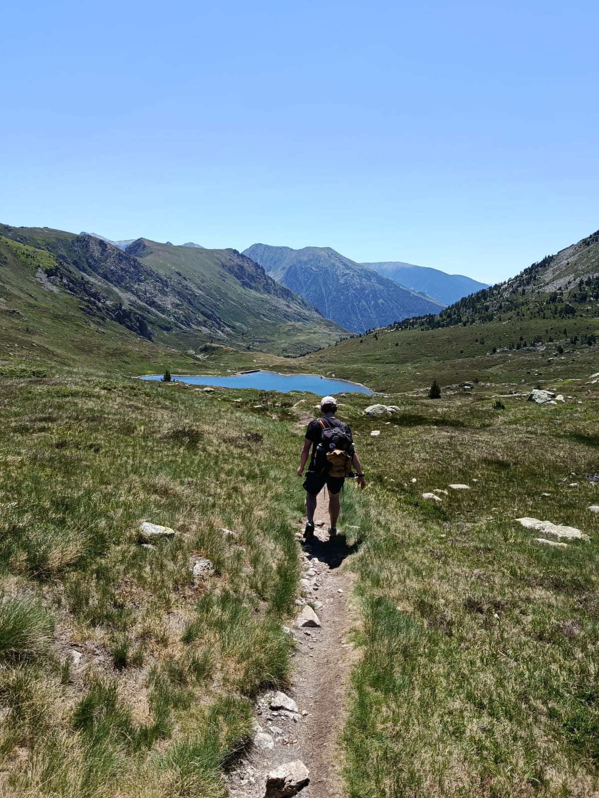
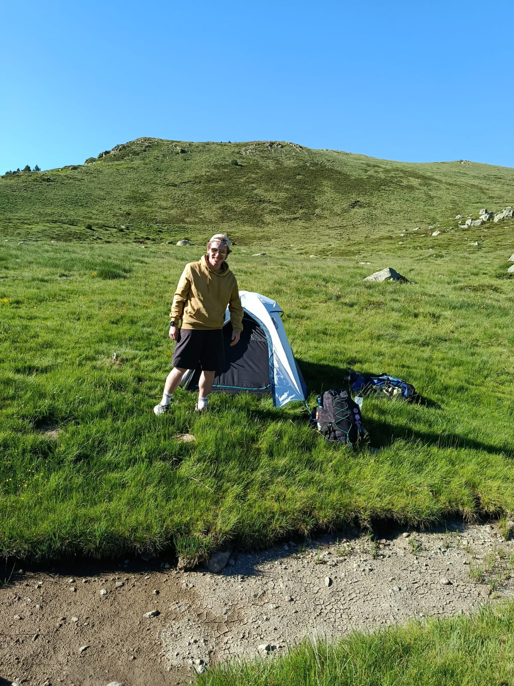

Trail “Les Crêtes Vosgiennes” (August 23, 2026): Finisher on the Vosges mountain ridges.
Regular half-marathon and mountain trail outings (e.g., 26.19 km loop around Corcieux).
Marathon Côte Indigo finishers (42.195 km — April 2026)Trail Running · August 23, 2026 · Vosges
Trail des Crêtes Vosgiennes
Mountain trail race along the scenic ridges of the Vosges — rocky climbs, wide mountain panoramas, and great race-day atmosphere.

Along the Vosges mountain ridges

Ridge climb with spectators cheering

On the course — August 23, 2026Final stretch toward the finish
7Randos · ENSEEIHT & Pyrenees Bivouac
Hiking & Bivouac
Mountain hikes in the Pyrenees and the Vosges with the 7Randos club, including a 2-day bivouac trek near Andorra with a friend: 35 km · 2,500 m D+ / 2,500 m D-.
High-altitude bivouac camp near Andorra — golden hour in the Pyrenees

Descent toward an alpine lake (35 km · ±2,500 m elevation)

Bivouac camp setup on the ridgeMorning light over the Pyrenees peaks
Mountain panorama with 7Randos
Outdoors
Cycling
Mountain biking and countryside rides across trails in the Vosges and Occitanie.